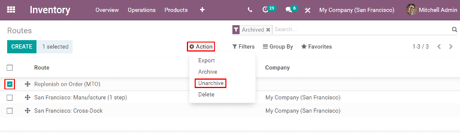

Replenish on order (MTO)¶
Replenish on order, also known as MTO (make to order), is a replenishment strategy that creates a draft order for a product every time a sales order is created for it. For products that are purchased from a vendor, a request for quotation (RFQ) is created, while a sales order for a product manufactured in-house triggers the creation of a manufacturing order. The creation of a RFQ or manufacturing order occurs every time a sales order is created, regardless of the current stock level of the product being ordered.
Unarchive the Replenish on Order (MTO) route¶
By default, Odoo sets the MTO route as archived. This is because MTO is a somewhat niche workflow that is only used by certain companies. However, it is easy to unarchive the route in just a few simple steps.
To do so, begin by navigating to . On the Routes page, click the Filters button and select the Archived option. This shows all routes that are currently archived.

Enable the checkbox next to Replenish on Order (MTO), then click the Action button to reveal a drop-down menu. From the drop-down menu, select Unarchive.
Finally, remove the Archived filter from the Search… bar. The Routes page will now show all available routes, including Replenish on Order (MTO), which is now selectable on the inventory tab of each product page.

Configure a product to use the MTO route¶
With the MTO route unarchived, products can now be properly configured to use replenish on order. To do so, begin by going to , then select an existing product, or click Create to configure a new one.
On the product page, select the Inventory tab and enable the Replenish on Order (MTO) route in the Routes section, along with one other route.
Important
The Replenish on Order (MTO) route does not work unless another route is selected as well. This is because Odoo needs to know how to replenish the product when an order is placed for it (buy it, manufacture it, etc.).

If the product is purchased from a vendor to fulfill sales orders, enable the Can be Purchased checkbox under the product name. Doing so makes the Purchase tab appear alongside the other settings tabs below.
Select the Purchase tab and specify a Vendor and the Price they sell the product for.

If the product is manufactured, make sure that it has a bill of materials (BOM) configured for it. To do so, click the Bill of Materials smart button at the top of the screen, then click Create on the Bill of Materials page to configure a new BOM for the product.
On the blank BOM form, add the components used to manufacture the product on the Components tab, along with the operations required for the manufacturing workflow on the Operations tab.
Finally, click Save to save the BOM.
Fulfill a sales order using the MTO route¶
After configuring a product to use the MTO route, a replenishment order is created for it every time a sales order including the product is confirmed. The type of order created depends on the second route selected in addition to MTO.
For example, if Buy was the second route selected, then a purchase order is created upon confirmation of a sales order.
Important
When the MTO route is enabled for a product, a replenishment order is always created upon confirmation of a sales order. This is the case even if there is enough stock of the product on-hand to fulfill the sales order, without buying or manufacturing additional units of it.
While the MTO route can be used in unison with a variety of other routes, the Buy route is used as the example for this workflow. Begin by navigating to the app, then click Create, which opens a blank quotation form.
On the blank quotation form, add a Customer, then click Add a product under the Order Lines tab, and enter a product that has been configured to use the MTO and Buy routes. Click Confirm and the quotation is turned into a sales order.
A Purchase smart button now appears in the top-right corner of the sales order. Clicking it opens the RFQ associated with the sales order.
Click Confirm Order to confirm the RFQ, and turn it into a purchase order. A green Receive Products button now appears at the top of the purchase order. Once the products are received, click Receive Products to register them into inventory.
Return to the sales order by clicking the SO breadcrumb, or by navigating to , and selecting the sales order.
Finally, click the Delivery smart button in the top-right of the order to be taken to the delivery order. Once the products have been shipped to the customer, click Validate to confirm the delivery.